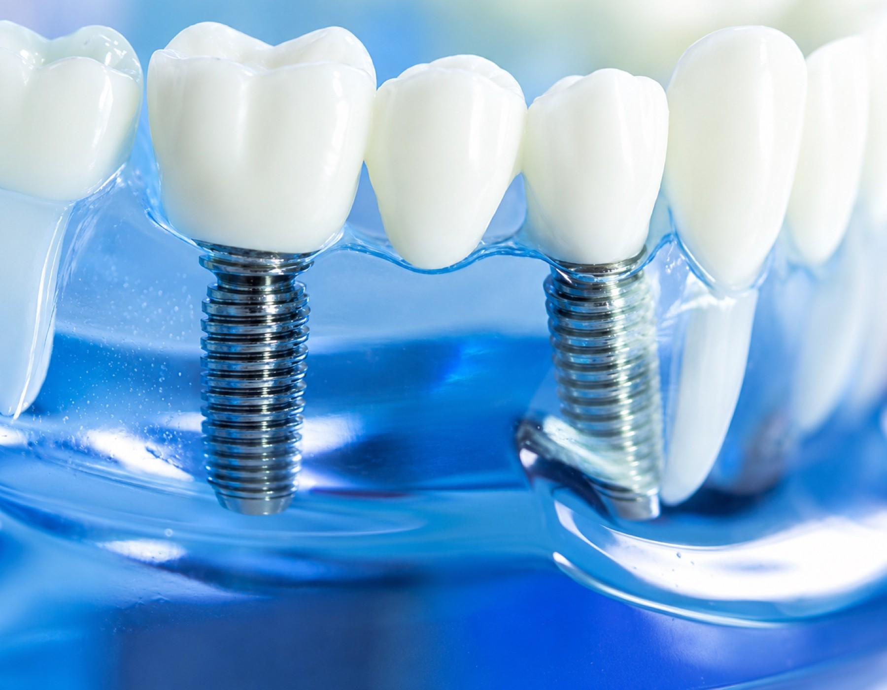

Dental Implants in Aventura: Candidacy, Healing, and Care

Table of Contents
- Dental Implants in Aventura: Start With an Evaluation
- Who May Be a Candidate for an Implant?
- Could Bone Grafting Be Part of the Plan?
- What the Implant Process May Involve
- Healing and Recovery: What Should You Expect?
- How to Maintain Dental Implants After Healing
- Alternatives to Dental Implants
- Questions to Ask at an Implant Consultation
- Choosing the Next Step in Aventura
- Frequently Asked Questions
Dental implants in Aventura may be an option for replacing one or more missing teeth, but the right plan depends on an examination, the condition of your gums and jawbone, your health history, and what you want your replacement tooth or teeth to do. An implant is not a universal or automatically permanent solution. A careful evaluation helps determine whether an implant, a bridge, a removable denture, or another approach is appropriate for your situation.
Ready to discuss a missing tooth or an implant evaluation? Call (305) 933-2501 to speak with Aventura Dental Center.
Dental Implants in Aventura: Start With an Evaluation
A dental implant usually includes an implant post placed in the jaw, an abutment that connects the post to the restoration, and a crown, bridge, or denture component that replaces the visible tooth or teeth. The parts and sequence can differ depending on whether you are replacing one tooth, several teeth, or most of an arch.
The first step is not choosing a package or promising a result. It is learning why the tooth is missing or may need to be removed, checking the surrounding teeth and tissues, and reviewing your goals. The visit may include a medical and dental history, an examination of the teeth and gums, and imaging when it is due or needed. The dentist can then explain what appears suitable, what needs treatment first, and whether additional planning is needed.
If a tooth is painful or infected, those symptoms do not by themselves prove that extraction and an implant are required. A dentist must assess whether the tooth can be restored and what option best supports your oral health. When a tooth cannot be repaired, replacement planning may be discussed as part of the overall care sequence rather than assumed to happen immediately.
Who May Be a Candidate for an Implant?
Implant candidacy is individualized. Many adults with a missing tooth can be evaluated for implant treatment, but eligibility depends on more than age or a desire for a fixed replacement. The dentist considers oral health, available bone, healing factors, the proposed restoration, and your ability to maintain the result.
Gum and bone health matter
Healthy or appropriately managed gums help support the tissues around an implant. Gum inflammation, untreated periodontal disease, decay, or another active infection may need attention before implant placement. The jawbone also needs enough volume and density for the planned implant, although a shortfall does not always end the conversation. It may lead to a different design, a grafting discussion, or another replacement option.
Your medical history is part of planning
Tell the dental team about medical conditions, medications, tobacco or nicotine use, previous radiation, allergies, and any history of healing problems. These factors do not create a simple yes-or-no rule for every patient, but they can affect risk, timing, maintenance, or the type of treatment recommended. Do not stop a prescribed medication because you are considering an implant. Ask the prescribing clinician and dental team how your medicines should be managed.
Readiness includes home care and follow-up
An implant is not maintenance-free. Readiness includes understanding the visits involved, following post-treatment instructions, cleaning around the restoration, and returning for professional follow-up. A patient who needs a removable option, staged treatment, or treatment for active disease first may still have a useful path forward. The evaluation is where those choices are compared.
Could Bone Grafting Be Part of the Plan?
After a tooth is lost, the bone that once supported its root can change. Previous infection, trauma, gum disease, anatomy, or the length of time since tooth loss can also affect the available bone. If the planned implant needs more support than the existing bone provides, the dentist may discuss bone grafting or another technique before or as part of implant treatment.
Bone grafting is not required for every implant patient, and a discussion of grafting is not a promise that the procedure will be needed. The recommendation depends on the examination and imaging. It may change the order of visits and the healing period. Ask what area would be treated, why it is being considered, what alternatives exist, and how the decision affects the proposed restoration.
A grafting conversation should be specific to your anatomy. Avoid relying on a general timeline or an online checklist to decide whether an implant is possible. The U.S. Food and Drug Administration's dental implant information also explains that implants are medical devices and that patients should discuss benefits, risks, and questions with a qualified dental professional.
What the Implant Process May Involve
1. Examination and treatment planning
The evaluation identifies the missing tooth or teeth, assesses the bite and surrounding structures, and reviews your medical history and goals. Imaging may be recommended when it helps assess bone or plan placement. If gum disease, decay, an infection, or another concern is present, the sequence may begin with treating that issue. The plan should identify the proposed implant location, the restoration, any possible grafting, and the follow-up needed.
2. Placement and early healing
When an implant is placed, the post is positioned in the jaw and the area is allowed to heal. The exact procedure, anesthesia, temporary replacement, and instructions depend on the case. A temporary tooth or restoration may be appropriate for some patients, but a same-day temporary is selective and is not the same as a permanent same-day tooth. Ask what you will be able to eat, how to protect the area, and whom to call if a problem develops.
3. Integration and restoration
The implant must heal and integrate with the surrounding bone before the final restoration is completed when the treatment plan calls for that sequence. Aventura Dental Center's service information describes individual implant bone integration as often taking about three to six months, while also noting that grafting, health factors, and healing can change the schedule. That range is a practice description, not a guarantee or a deadline for every patient.
After the appropriate healing and evaluation, the abutment and custom crown or other restoration can be planned or fitted. The final result depends on the health of the tissues, the design, the bite, the restoration, and ongoing care. A patient should receive instructions specific to the restoration rather than assuming that every implant is cared for in exactly the same way.
Healing and Recovery: What Should You Expect?
Some soreness, swelling, or sensitivity can occur after oral surgery, but the expected course varies with the procedure and the number of sites treated. Your care team can explain how to use prescribed or recommended medication, when to resume normal brushing in the treated area, what foods are practical, and when follow-up is planned. Follow the instructions you receive instead of comparing your recovery with someone else's story.
Call the office if symptoms are worsening, persistent, or different from what you were told to expect. Increasing swelling, fever, uncontrolled bleeding, severe pain, a loose temporary, or a restoration that feels displaced deserves prompt guidance. If you have a serious injury, uncontrolled bleeding, trouble breathing, or another emergency, seek emergency medical help. A web form cannot provide immediate clinical triage, so call first for dental symptom guidance during office hours.
Healing can be affected by the surgical site, grafting, oral hygiene, smoking or nicotine, medical conditions, medications, and how closely instructions are followed. This is one reason a dentist should not promise that every patient will heal on the same schedule or experience the same level of discomfort.
How to Maintain Dental Implants After Healing
Daily care remains important after the implant and restoration are in place. Brush as directed, clean between teeth and around the restoration with the tools recommended for your case, and keep regular dental visits. Your maintenance plan may include checks of the gums, bite, restoration, and the tissues around the implant.
Do not assume an implant cannot develop a problem because it is not a natural tooth. Plaque and inflammation can affect the tissues around an implant, and the crown, bridge, or denture portion can wear or loosen. Call for an evaluation if you notice bleeding, persistent tenderness, swelling, a bad taste, a change in your bite, movement, or difficulty cleaning the area. Early attention can help identify the cause, but only an examination can determine what is happening.
Maintenance also includes protecting the rest of your mouth. Treat active gum disease or decay, follow recommendations for night guards when relevant, and tell the dental team about changes in your health or medication. The goal is not to promise that an implant will last forever. The goal is to create a realistic plan for care, monitoring, and repair if a problem arises.
Alternatives to Dental Implants
An implant is one tooth-replacement option, not the only one. A conventional dental bridge can fill a gap by using prepared neighboring teeth for support. A partial or complete denture can replace several teeth or an arch and can be removable. In some cases, preserving a natural tooth with restorative treatment may be considered instead of removing it. The appropriate choice depends on the tooth's condition, the surrounding tissues, the number and location of missing teeth, your preferences, and the treatment plan.
Leaving a space untreated may also have consequences for chewing, the bite, neighboring teeth, and the appearance of the smile, but those effects are not identical for every person. Ask what may happen if you wait and what monitoring is needed. A comparison should include cleaning, repairs, comfort, stability, appearance, visits, and the condition of the teeth used to support a bridge or denture.
For patients missing most teeth in an arch, an implant-supported or full-arch option may be discussed separately from a single-tooth implant. Full-arch treatment has its own evaluation, design, healing, temporary, and maintenance considerations. It should not be treated as interchangeable with an individual implant or as a guaranteed same-day permanent solution.
Questions to Ask at an Implant Consultation
- What is causing the missing tooth or why is the tooth no longer restorable?
- What did the examination and imaging show about my gums, teeth, and bone?
- Would active gum disease, decay, infection, or another issue need treatment first?
- Is bone grafting being considered, and what would it change about the sequence?
- What restoration is being proposed, and how will it be cleaned and maintained?
- What temporary option, if any, is appropriate while the area heals?
- What symptoms should prompt a call, and who should I contact after the procedure?
- What alternatives should I compare, including a bridge, denture, or preserving the natural tooth?
- Which parts of the plan are estimates and which decisions depend on how I heal?
Choosing the Next Step in Aventura
The most useful next step is an evaluation that connects your oral health, anatomy, goals, and ability to maintain the proposed restoration. Aventura Dental Center's dental implants service page describes the practice's implant pathway, including assessment, possible graft planning, placement, healing, restoration, and follow-up. Reading that page can help you prepare questions, but it cannot determine candidacy without an examination.
If you are considering replacing a missing tooth, call (305) 933-2501 to ask about an evaluation. The team can discuss your concern, explain what information to bring, and help identify the appropriate next step. Treatment, timing, healing, and cost depend on the individual plan, so seek a patient-specific explanation before deciding.
Frequently Asked Questions
Does everyone with a missing tooth qualify for an implant?
No. Many people can be evaluated, but candidacy depends on the gums, bone, health history, restoration, home care, and other factors. Some patients need treatment first, and others may be better served by a bridge, denture, or another option.
Does dental implant treatment always require a bone graft?
No. Bone grafting is considered when the available bone does not provide the support needed for the proposed plan. Imaging and examination determine whether it is relevant.
How long does an implant take to heal?
The schedule varies. The practice describes individual implant bone integration as often taking about three to six months, but grafting, health factors, the location, and individual healing can change the timing. This is not a guaranteed treatment deadline.
Can I receive a permanent tooth on the same day?
A same-day temporary may be appropriate for selected cases, but it is not a promise of a same-day permanent crown. Ask which restoration is planned for each stage and what conditions must be met before final placement.
Are implants the only way to replace missing teeth?
No. Bridges, partial or complete dentures, and treatment that preserves a restorable natural tooth may be considered. Your dentist can compare the options for your mouth and goals.
To discuss dental implants in Aventura, call (305) 933-2501. An evaluation is the appropriate way to discuss candidacy, possible grafting, healing, maintenance, and alternatives.